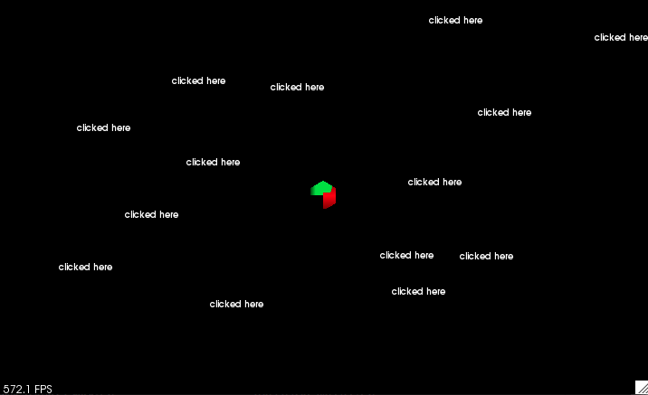

PCLVisualizer¶
PCLVisualizer is PCL’s full-featured visualisation class. While more complex to use than the CloudViewer, it is also more powerful, offering features such as displaying normals, drawing shapes and multiple viewports.
This tutorial will use a code sample to illustrate some of the features
of PCLVisualizer, beginning with displaying a single point cloud. Most
of the code sample is boilerplate to set up the point clouds that will
be visualised. The relevant code for each sample is contained in a
function specific to that sample. The code is shown below. Copy it into
a file named pcl_visualizer_demo.cpp.
Compiling and running the program¶
Create a CMakeLists.txt file with the following contents:
After you have made the executable, you can run it like so:
$ ./pcl_visualizer_demo -h
Change the option to change which demo is executed. See the help output for details.
To exit the viewer application, press q. Press r to centre and
zoom the viewer so that the entire cloud is visible. Use the mouse to
rotate the viewpoint by clicking and dragging. You can use the scroll
wheel, or right-click and drag up and down, to zoom in and out.
Middle-clicking and dragging will move the camera.
Visualising a single cloud¶
This sample uses PCLVisualizer to display a single PointXYZ cloud. It
also illustrates changing the background colour and displaying the axes.
The code is in the function simpleVis.

Explanation¶
The simpleVis function shows how to perform the most basic
visualisation of a point cloud. Let’s take a look at the function,
line-by-line.
...
pcl::visualization::PCLVisualizer::Ptr viewer (new pcl::visualization::PCLVisualizer ("3D Viewer"));
...
This creates the viewer object, giving it a nice name to display in the title bar. We are storing it in a smart pointer only so it can be passed around the demo program. Usually, you do not need to do this.
...
viewer->setBackgroundColor (0, 0, 0);
...
The background colour of the viewer can be set to any RGB colour you like. In this case, we are setting it to black.
...
viewer->addPointCloud<pcl::PointXYZ> (cloud, "sample cloud");
...
This is the most important line. We add the point cloud to the viewer,
giving it an ID string that can be used to identify the cloud in other
methods. Multiple point clouds can be added with multiple calls to
addPointCloud(), supplying a new ID each time. If you want to update
a point cloud that is already displayed, you must first call
removePointCloud() and provide the ID of the cloud that is to be
updated. (Note: versions 1.1 and up of PCL provide a new API method,
updatePointCloud(), that allows a cloud to be updated without
manually calling removePointCloud() first.)
This is the most basic of addPointCloud()’s many
variations. Others are used to handle different point types, display
normals, and so on. We will illustrate some others during this tutorial,
or you can see the PCLVisualizer documentation for more details.
...
viewer->setPointCloudRenderingProperties (pcl::visualization::PCL_VISUALIZER_POINT_SIZE, 1, "sample cloud");
...
This next line changes the size of the rendered points. You can control the way any point cloud is rendered in the viewer using this method.
...
viewer->addCoordinateSystem (1.0);
...
Viewing complex point clouds can often be disorientating. To keep
yourself aligned in the world, axes can be displayed. These will appear
as three cylinders along the X (red), Y (green) and Z (blue) axes. The
size of the cylinders can be controlled using the scale parameter.
In this case, we have set it to 1.0 (which also happens to be the
default if no value is given). An alternative version of this method can
be used to place the axes at any point in the world.
...
viewer->initCameraParameters ();
...
This final call sets up some handy camera parameters to make things look nice.
There is one final piece of code relevant to all the samples. It can be found at the bottom of the sample:
...
while (!viewer->wasStopped ())
{
viewer->spinOnce (100);
boost::this_thread::sleep (boost::posix_time::microseconds (100000));
}
...
These lines are running an event loop. Each call to spinOnce gives
the viewer time to process events, allowing it to be interactive. There
is also a spin method, which only needs to be called once.
Adding some colour¶
Often, a point cloud will not use the simple PointXYZ type. One common point type is PointXYZRGB, which also contains colour data. Aside from that, you may wish to colour specific point clouds to make them distinguishable in the viewer. PCLVizualizer provides facilities for displaying point clouds with the colour data stored within them, or for assigning colours to point clouds.
RGB point clouds¶
Many devices, such as the Microsoft Kinect, produce point clouds with
RGB data. PCLVisualizer can display the cloud using this data to colour
each point. The code in the rgbVis function shows how to do this.
{kind=link}
Explanation¶
Not much of the code in this sample has changed from the earlier sample.
...
pcl::visualization::PCLVisualizer::Ptr rgbVis (pcl::PointCloud<pcl::PointXYZRGB>::ConstPtr cloud)
...
First, notice that the point type has changed from the simple example.
We now use a point type that also provides room for RGB data. This is
important; without the RGB fields in the point (the point type does not
necessarily have to be PointXYZRGB, as long as it has the three
colour fields), PCLVisualizer would not know what colours to use.
...
pcl::visualization::PointCloudColorHandlerRGB<pcl::PointXYZRGB> rgb(point_cloud_ptr);
...
Next, after setting the viewer’s background colour, we create a colour handler object. PCLVisualizer uses objects like this to display custom data. In this case, the object will get the RGB colour fields from each point for the viewer to use when drawing them. Many other handlers exist for a wide range of purposes. We will see another of the colour handlers in the next code sample, but handlers also exist for such purposes as drawing any other field as the colour and drawing geometry from point clouds. See the documentation for details.
...
viewer->addPointCloud<pcl::PointXYZRGB> (cloud, rgb, "sample cloud");
...
Finally, when we add the point cloud, we specify the colour handler when we add the point cloud to the viewer.
Custom colours¶
The second code sample demonstrates giving a point cloud a single
colour. We can use this technique to give specific point clouds their
own colours, allowing us to distinguish individual point clouds. In this
sample, given in the customColourVis function, we have set the point
cloud’s colour to green. (We have also increased the size of the points
to make the colour more visible.)

Explanation¶
Again, not much of the code in this sample has changed from the earlier sample.
...
pcl::visualization::PCLVisualizer::Ptr customColourVis (pcl::PointCloud<pcl::PointXYZ>::ConstPtr cloud)
...
The point type in use this time is back to PointXYZ again. When setting a custom colour handler for a point cloud, it doesn’t matter what the underlying data type is. None of the point fields are used for the colour with the custom colour handler.
...
pcl::visualization::PointCloudColorHandlerCustom<pcl::PointXYZ> single_color (cloud, 0, 255, 0);
...
We create a custom colour handler and assign it a nice, bright shade of green.
...
viewer->addPointCloud<pcl::PointXYZ> (cloud, single_color, "sample cloud");
...
As with the previous example, we pass the colour handler in when we call
addPointCloud<>().
Normals and other information¶
Displaying normals is an important step in understanding a point cloud. The PCLVisualizer class has the ability to draw normals, as well as other interesting point cloud information, such as principal curvatures and geometries.
The code sample in the normalsVis function shows how to display the
normals of a point cloud. The code for calculating the normals will not
be explained in this tutorial. See the normals calculation tutorial for
details.
{kind=link}
Explanation¶
The relevant line of code is placed after the line to draw the point cloud.
...
viewer->addPointCloudNormals<pcl::PointXYZRGB, pcl::Normal> (cloud, normals, 10, 0.05, "normals");
...
Once you have your normals, one extra line is all it takes to display them in the viewer. The parameters to this method set the number of normals to display (here, every tenth normal is displayed) and the length of the line to draw for each normal (0.05, in this case).
Drawing Shapes¶
PCLVisualizer allows you to draw various primitive shapes in the view. This is often used to visualise the results of point cloud processing algorithms, for example, visualising which clusters of points have been recognised as landmarks by drawing transparent spheres around them.
The sample code in the shapesVis function illustrates some of the
methods used to add shapes to a viewer. It adds four shapes:
A line from the first point in the cloud to the last point in the cloud.
A plane at the origin.
A sphere centred on the first point in the cloud.
A cone along the Y-axis.
{kind=link}
Explanation¶
The relevant parts of the code sample for drawing shapes begin after the point cloud is added to the viewer.
...
viewer->addLine<pcl::PointXYZRGB> (cloud->points[0], cloud->points[cloud->size() - 1], "line");
...
This line (of code) adds a line (in space) from the first point in the cloud to the last point. This method is useful, for example, for showing correspondences between point clouds. In this case, the line is using the default colour, but you can also specify the colour of the line. Drawing shapes at points from a point cloud is very common, and various shapes are available.
...
viewer->addSphere (cloud->points[0], 0.2, 0.5, 0.5, 0.0, "sphere");
...
This next line adds a sphere centred on the first point in the cloud with a radius of 0.2. It also gives the sphere a colour.
...
pcl::ModelCoefficients coeffs;
coeffs.values.push_back(0.0);
coeffs.values.push_back(0.0);
coeffs.values.push_back(1.0);
coeffs.values.push_back(0.0);
viewer->addPlane (coeffs, "plane");
...
Next, we add a plane to the drawing. In this case, we are specifying the plane using the standard plane equation (ax + by + cz + d = 0). Our plane will be centered at the origin and oriented along the Z-axis. Many of the shape drawing functions take coefficients in this way.
...
coeffs.values.clear();
coeffs.values.push_back(0.3);
coeffs.values.push_back(0.3);
coeffs.values.push_back(0.0);
coeffs.values.push_back(0.0);
coeffs.values.push_back(1.0);
coeffs.values.push_back(0.0);
coeffs.values.push_back(5.0);
viewer->addCone (coeffs, "cone");
...
Finally, we add a cone. We are again using model coefficients to specify the cone’s parameters.
Multiple viewports¶
You will often want to compare multiple point clouds side-by-side. While you could draw them in the same view port, this can get confusing. PCLVisualizer allows you to draw multiple point clouds in separate viewports, making comparison easy.
The code in the viewportsVis function uses viewports to demonstrate
comparing the normals calculated for a point cloud. Two sets of normals
are calculated for the same cloud but using a different search radius.
The first time, the search radius is 0.05. The second time, it is 0.1.
The normals for the 0.05 radius search are displayed in the viewport
with the black background. The normals for the 0.1 radius search are
displayed in the viewport with the grey background.
Comparing the two sets of normals side-by-side makes it immediately obvious what the effects of the different algorithm parameter are. In this way, you can experiment with the parameters for algorithms to find good settings, quickly viewing the results.

Explanation¶
...
pcl::visualization::PCLVisualizer::Ptr viewer (new pcl::visualization::PCLVisualizer ("3D Viewer"));
viewer->initCameraParameters ();
...
This is our standard code for creating a viewer.
...
int v1(0);
viewer->createViewPort (0.0, 0.0, 0.5, 1.0, v1);
viewer->setBackgroundColor (0, 0, 0, v1);
viewer->addText ("Radius: 0.01", 10, 10, "v1 text", v1);
pcl::visualization::PointCloudColorHandlerRGBField<pcl::PointXYZRGB> rgb (cloud);
viewer->addPointCloud<pcl::PointXYZRGB> (cloud, rgb, "sample cloud1", v1);
...
The next step is to create a new viewport. The four parameters are the minimum and maximum ranges of the viewport on the X- and Y-axes, between 0 and 1. We are creating a viewport that will fill the left half of the window. We must store the view port ID number that is passed back in the fifth parameter and use it in all other calls where we only want to affect that viewport.
We also set the background colour of this viewport, give it a label based on what we are using the viewport to distinguish, and add our point cloud to it, using an RGB colour handler.
...
int v2(0);
viewer->createViewPort (0.5, 0.0, 1.0, 1.0, v2);
viewer->setBackgroundColor (0.3, 0.3, 0.3, v2);
viewer->addText ("Radius: 0.1", 10, 10, "v2 text", v2);
pcl::visualization::PointCloudColorHandlerCustom<pcl::PointXYZRGB> single_color (cloud, 0, 255, 0);
viewer->addPointCloud<pcl::PointXYZRGB> (cloud, single_color, "sample cloud2", v2);
...
Then we do the same thing again for the second viewport, making it take up the right half of the window. We make this viewport a shade of grey so it is easily distinguishable in the demonstration program. We add the same point cloud, but this time we give it a custom colour handler.
...
viewer->setPointCloudRenderingProperties (pcl::visualization::PCL_VISUALIZER_POINT_SIZE, 3, "sample cloud1");
viewer->setPointCloudRenderingProperties (pcl::visualization::PCL_VISUALIZER_POINT_SIZE, 3, "sample cloud2");
viewer->addCoordinateSystem (1.0);
...
These three lines set some properties globally for all viewports. Most of the PCLVisualizer methods accept an optional viewport ID parameter. When it is specified, they affect only that viewport. When it is not, as in this case, they affect all viewports.
...
viewer->addPointCloudNormals<pcl::PointXYZRGB, pcl::Normal> (cloud, normals1, 10, 0.05, "normals1", v1);
viewer->addPointCloudNormals<pcl::PointXYZRGB, pcl::Normal> (cloud, normals2, 10, 0.05, "normals2", v2);
...
Finally, we add the normals, one to each viewport.
Interaction Customization¶
You will sometimes feel that the interactivity options offered by the default
mouse and key bindings do not satisfy your needs and you may want to extend
functionality with features such as the possibility of saving the currently
shown point clouds when pressing a button or annotating certain locations on the
rendering window with your mouse etc. A very simple example of such things
is found in the interactionCustomizationVis method.
Note
In Mac platforms and if using a VTK version prior to 7.0, the executable is required to be built as an Application Bundle, in order to have proper mouse and keyboard interaction support. For more instructions on how to do that, please consult the Cocoa VTK Wiki.
In this part of the tutorial you will be shown how to catch mouse and keyboard events. By right clicking on the window, a 2D text will appear and you can erase all the text instances by pressing ‘r’. The result should look something like this:
{kind=link}
Explanation¶
...
pcl::visualization::PCLVisualizer::Ptr viewer (new pcl::visualization::PCLVisualizer ("3D Viewer"));
viewer->initCameraParameters ();
...
This is the standard code for instantiating a viewer.
...
viewer->registerKeyboardCallback (keyboardEventOccurred, (void*)&viewer);
viewer->registerMouseCallback (mouseEventOccurred, (void*)&viewer);
...
These two lines of code will register the two methods, keyboardEventOccurred
and mouseEventOccurred to the keyboard and mouse event callback, respectively.
The second arguments for the two method calls are the so-called cookies. These
are any parameters you might want to pass to the callback function. In our case,
we want to pass the viewer itself, in order to do modifications on it in case
of user interaction. Note that these arguments must be in the form of a single
void* instance, so we need to cast the pointer to our smart pointer to void*.
...
void mouseEventOccurred (const pcl::visualization::MouseEvent &event,
void* viewer_void)
{
pcl::visualization::PCLVisualizer::Ptr viewer = *static_cast<pcl::visualization::PCLVisualizer::Ptr *> (viewer_void);
if (event.getButton () == pcl::visualization::MouseEvent::LeftButton && event.getType () == pcl::visualization::MouseEvent::MouseButtonRelease)
{
std::cout << "Left mouse button released at position (" << event.getX () << ", " << event.getY () << ")" << std::endl;
char str[512];
sprintf (str, "text#%03d", text_id ++);
viewer->addText ("clicked here", event.getX (), event.getY (), str);
}
}
...
This is the method that handles the mouse events. Every time any kind of mouse
event is registered, this function will be called. In order to see exactly what
that event is, we need to extract that information from the event instance.
In our case, we are looking for left mouse button releases. Whenever such an event
happens, we shall write a small text at the position of the mouse click.
...
void keyboardEventOccurred (const pcl::visualization::KeyboardEvent &event,
void* viewer_void)
{
pcl::visualization::PCLVisualizer::Ptr viewer = *static_cast<pcl::visualization::PCLVisualizer::Ptr *> (viewer_void);
if (event.getKeySym () == "r" && event.keyDown ())
{
std::cout << "r was pressed => removing all text" << std::endl;
char str[512];
for (unsigned int i = 0; i < text_id; ++i)
{
sprintf (str, "text#%03d", i);
viewer->removeShape (str);
}
text_id = 0;
}
}
...
The same approach applies for the keyboard events. We check what key was pressed and the action we do is to remove all the text created by our mouse clicks. Please note that when ‘r’ is pressed, the 3D camera still resets, as per the original binding of ‘r’ inside PCLVisualizer. So, our keyboard events do not overwrite the functionality of the base class.